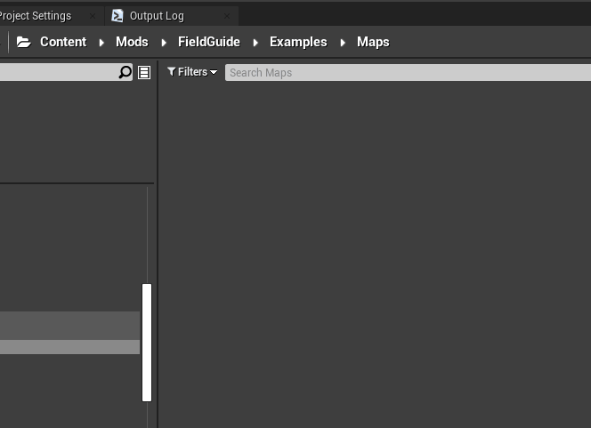
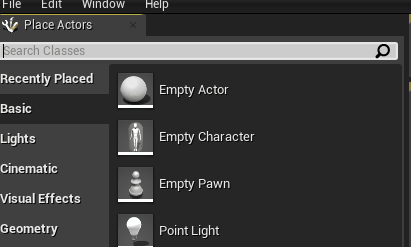

T2 Create a Free For All Map (FFA)
1 Requirements¶
- Unreal Engine 4.25.4
- recursively cloned version of our ArgonSDK#Repository
Optional: - Re-generated mesh and texture assets (AssetGenerator)
(so you can reuse TB’s visual assets)
2 Introduction¶
In this tutorial, we will create a simple FFA Map Using Sublevels (More info: UE Docs: Sublevels)
We will create 2 Sub-Levels:
Atmospherics(reusable)- Lights, Sky
FFA- Spawner
Question
Splitting the level into these parts will allow you to reuse atmospherics in other levels, thus saving time when you’re just exploring. Alternatively you can create a single Level containing all actors in this tutorial
3 Atmospherics Level¶
3.1 Create a new Level¶
- Navigate to
Content/Modsdirectory in `Content Browser

- Create a new folder within and open it
(
Right Click→New Folderor using theCTRL+Nshortcut) -
Create a new Level and give it a name (e.g.
Example_Atmospherics)Right Click→Level(Open the level after naming)
Upon opening, your editor will look like this:

3.2 Add lights and fog to your Scene¶
- In the
Place Actorsframe, search for and drag following actors into your scene - Directional Light
- Sky Light
- Exponential Height Fog
- Sky Atmosphere
- Sphere Reflection Capture

- In the
-
Activate
Atmosphere/Fog Sun Lightfor the Directional Light inDetailswindow
Info
This allows you to adjust sun’s position with by moving your mouse while holding CTRL+L
3.3 Reduce fog scattering (Optional)¶
-
Set
Directional/Fog Inscattering Colorto (almost) black for theExponentialHeightFogactor
-
Increase
Fog Height Falloffto 0.6 or more
3.4 Use a folder to organize actors (Optional)¶
Within the World Outliner, select all actors and move them to a separate folder.
Right Click→Move To→Create New Folder

4 FFA Level¶
4.1 Create a new Level in the same directory (e.g. FFA_Example)¶
Follow the steps described in 2. Don't forget to open your new level

4.2 Add Atmospherics Sublevel¶
-
Open the
Levelswindow if not visibleWindow→Levels -
Drag-And-Drop your Atmospherics level into the list.
-
Right-Clickon the Level and change theStreaming MethodtoAlways Loaded
-
Double-Click the
Persistent Levelentry to make it the active level
4.3 Create a floor¶
-
Drag-and-Drop a
CubefromPlace Actorswindow into your scene
-
Set Actor Scale values to (\(X=50, Y=50, Z=0.1\)) in the
Detailswindow(Optional) Apply a
Material Instanceof your liking (e.g.LS_StoneFloor02)
4.4 World Settings¶
Open World Settings window if not visible (Window→World Settings)
Adjust following Settings:
| Setting | Description/Value |
|---|---|
Map Name, Map Description |
Visible when the map loads ingame |
Attacking Faction |
FFA |
Gamemode Type |
Free for All |
Kill Z |
-5000 (this ensures that players/bots die when falling off the edge) |

Make sure current Gamemode is set to Mode_FFA_C:

4.5 Initial Spawners¶
-
Open your
Content Browserand add aBaseSpawneractor to your level
-
Adjust it’s Row/Column count and spacing in the
Detailswindow
In this example, we’ll use a 4x4 grid with a spacing of 500
The spawner visualization will reflect changes immediately

-
In
World Settings, assign the Spawner toAttacker Initial Spawn
-
Save your progress (
CRTL+SHIFT+Ato save everything)
4.6 Navigation Mesh (Bots)¶
A Navigation mesh will allow bots to plan their movements in the environment according to their current task.
Note
YT videos explaining UE4 NavMeshes are available in Additional Resources: Navigation
- Drag a
Nav Mesh Bounds Volumefrom thePlace Actorswindow into your scene. -
Scale and adjust it’s position to cover an area within your floor mesh
Press P to enable mesh visualization. Orange is your friend
5 Testing your Map¶
5.1 Add to the list of packaged maps¶
Right-Clickthe_Atmosphericsmap inContentbrowser- Select
Copy Reference(this will copy an internal path to clipboard)
- Select
-
Open
Project Settings- Type “cook” in the search bar
- Add a new entry to
List of maps to include in a packaged build - Paste the copied reference and adjust the path. For example:
- Copied:
World'/Game/Mods/FieldGuide/Examples/Maps/Example_Atmospherics.Example_Atmospherics' - Target:
/Game/Mods/FieldGuide/Examples/Maps/Example_Atmospherics
- Copied:

5.2 Build, Cook, Copy¶
- Build the scene lighting by clicking on
Build

- Save the map
CTRL+SHIFt+S -
Cook the map
File→Cook Content for WindowsThis step will create cooked assets under
ArgonSDK/Saved/Cooked/WindowsNoEditor/TBL/Content/<YourFolder>
-
(Optional) copy the cooked assets to game directory
- Navigate to
ArgonSDK\Saved\Cooked\WindowsNoEditor\TBL\Content\ - Copy the
Modsfolder to your Game’s Content dir (Chivalry2\TBL\Content)
- Navigate to
Note
This step is not required if your cooked Mods directory is symlinked to your game’s content directory
5.3 Testing your map¶
Info
The Mod Loader GUI automatically detects custom maps in the /Content/Mods directory (also those loaded from a pak file).
- Launch the moddable version of the game using
Unchained Launcher - Limit the number of bots to 15 (we only have 16 spawn slots)
-
Select
Customin the gamemode field. Your map should now be visible in the combo box to the left
After loading into map you should be able to spawn alongside bots.

Tip
You and the bots will spawn only once. Implementing Spawn Waves requires additional components and will be explained in next tutorial
Note
Example maps created in this tutorial are available under /Content/Mods/FieldGuide/Examples/Maps